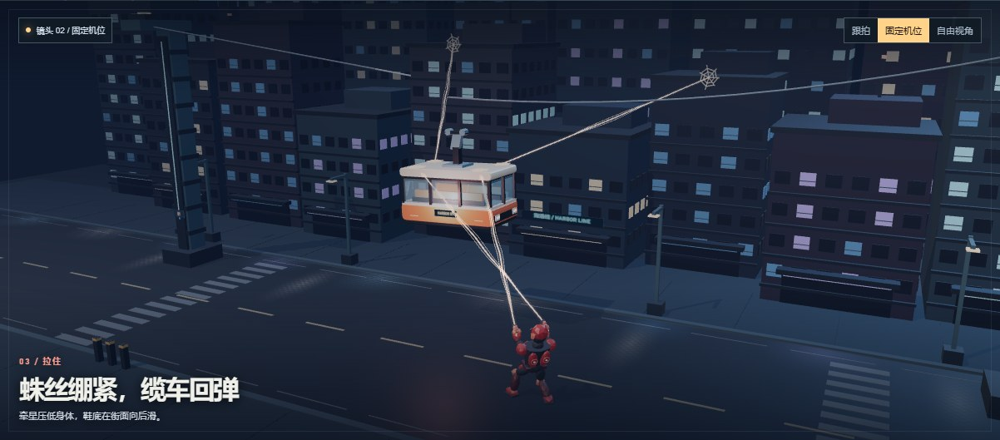
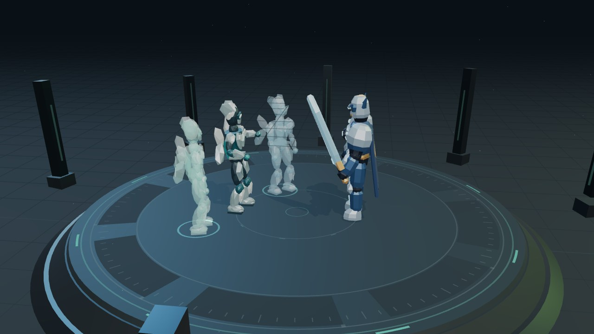
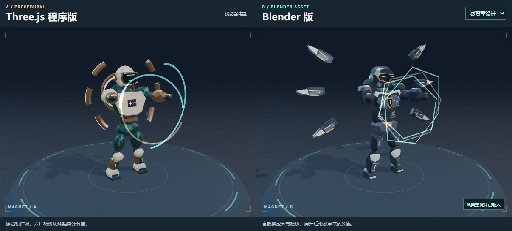

3D 展示需要连续的证据
模型可以旋转观察，能力可以暂停查看，故事可以重放。造型、动作与现场反馈连起来，才便于判断生成结果是否可用。
009 / 模型能力与应用价值研究
让角色、动作与故事成为可检查的原型。
探索 GPT-6.2 如何把自然语言需求转化为可编辑的三维角色、动作特效与场景代码，并通过实际运行检验。我们用 16 个角色、3 类场景与 Blender 造型实验，整理快速原型、互动讲解、视觉演示和角色复用的实现路径与价值。

角色身份12 位超能英雄 + 4 个竞技异种
实战场景竞技场 · 港湾街 · 近地轨道
建模流程Three.js 程序构建 / Blender 导出
01 / 出发点
一开始，我们在考虑一款与 AI 有关的 3D 游戏。讨论逐渐收敛到一个更具体的目标：看看模型能否通过代码做出足够多样的角色，让它们在场景里使用能力，并把整段过程实时运行起来。
这里研究的“生成”包含编写和迭代程序几何、动作、特效与场景逻辑，以及用 Blender 脚本生成资产。观众可以旋转模型、暂停回放、对比方案，再回到源码继续修改。
你提出的“先录角色形象，然后才是对应故事”，也成为后来组织项目的依据。角色需要能独立观察，能力需要有清楚的动作，场景要让观众看见能力改变了什么。
体型、材质和轮廓能被辨认，鼠标可以旋转和缩放。
蛛丝承重、极速转移、回溯轨迹等，各有自己的处理方式。
把角色放进同一个问题里，比较它们如何行动和接手。
02 / 能力与价值
每项能力都对应一个当前可打开的效果。应用价值从这些可运行的结果出发，指向概念验证、内容讲解和演示制作等具体工作。
| 相关能力 | 当前可操作的证据 | 可用价值 |
|---|---|---|
| 程序化 3D 建模形体 · 材质 · 结构 | 16 个角色拥有不同体型、材质与关节层级，可旋转、缩放和观察。查看角色名录 ↗ | 把文字构想变成可检查、可修改的视觉原型，辅助造型沟通与方案选择。 |
| 动作与特效编排姿态 · 时序 · 反馈 | 16 套竞技场招式显示蓄力、施放与冷却；映阵的分身与本体实际打出三段伤害。看分身合击 ↗ | 将交互规则、角色动作和可见反馈对应起来，为技能设计、产品状态演示提供原型。 |
| 多角色与现场协调空间 · 时间 · 接力 | 同一缆车事故有 11 条单人路线；轨道有 5 条方案，时缝与折径可同场接手。看联合拦截 ↗ | 用三维场景解释先后顺序、受力关系与协作过程，可迁移到互动讲解和流程叙事。 |
| 同步对照与回放共享镜头 · 可控时间 | 在同一秒并排比较两位英雄，拖动进度、打开只看画面，并用链接恢复暂停位置。打开双画面对照 ↗ | 让设计评审有共同的观察条件，便于演示、录屏与复查具体时刻。 |
| Blender 资产生成精修 · 重设计 · 导出 | 脚本实际导出两款磁极 GLB，比较原型精修和六片磁翼重设计，复用原关节驱动。对比三种造型 ↗ | 探索从快速代码原型到独立三维资产的制作路径，并区分表面细化与造型设计的投入。 |
| 工程复用与迭代共享模型 · 跨场景加载 | 英雄名录共用角色工厂，磁极的两款外观可以带进竞技场和轨道回放。看磁翼型进场 ↗ | 为新增场景沿用角色与动作提供基础，也让反馈能落到具体资产、参数和代码上继续修改。 |
本轮检查了效果能否运行、选择是否保留、动作是否可读及手机布局。具体能节省多少制作时间、是否提升讲解效果和游戏体验，仍需放进真实任务测量。
03 / 实践过程
下面按尝试的先后整理。每一步都有可打开的结果，方便把当时的理解和实际画面对上。
用 Three.js 的几何体、材质和层级关节构建角色。从双足卫士、四足岩兽、六足机械到浮游生物，再扩展到各类超能英雄。
得到的认识 体型和动作结构一起变化，才能让名录里的差异更明显。
看 16 个角色的实时模型 ↗围绕同一场缆车事故，做出 11 条单人救援路线。牵星绷紧蛛丝，疾弧在慢动作中逐个转移乘客，根珀则让藤架弯曲卸力。之后增加牵星与疾弧的联合救援，提供街头和极速两种视角。
得到的认识 固定事故与环境后，更容易看出英雄之间的能力差异。
进入缆车现场 ↗把异种竞技场与超能现场的角色放进共用档案。前面看形象、预演动作，后面选场景；进入和返回时携带角色选择。随着轨道场景加入，名录也支持按任务筛选。
得到的认识 一位英雄可以服务于多个场景，新的外观也应复用已有动作。
从磁极档案开始 ↗轨道拦截把危机换成逼近空间站的失控卫星，已有 5 条单人路线。双画面让两种方法停在同一秒比较，联合模式则让时缝回拨卫星、折径接力开门送离。
得到的认识 并排对照适合观察差别，同场接力适合观察角色之间的关系。
最初对决已有技能伤害，但许多招式只显示通用命中闪光。后来补上 16 套招式表现与蓄力、施放、冷却提示。映阵的两道分身与本体交错出击，实际分三段扣血。
得到的认识 规则已经执行，还需要动作、特效和状态提示把过程传达出来。
选个对手，看映阵出招 ↗先保留磁极轮廓，比较程序版与 Blender 精修版。你指出主要差别只是精细度，于是又做了深色装甲、非对称面罩与六片独立磁翼，把轮廓和展开机制也纳入设计。
原演示只有 2.2 秒，展开后很快收回，还出现过第 0 秒卡住的问题。现在可从头播放 5.2 秒，保持展开并查看背面，右侧可切回原型精修。
打开三种造型的对照实验 ↗

效果截图取自项目实时渲染，点击可进入演示；页首引导图沿用已生成的截图汇总。
04 / 建模实验
程序版是最初的形体和关节设计；原型精修把相近轮廓做得更细；磁翼重设计进一步改变装甲语言、背部结构与展开轮廓。它们属于同一个角色身份。

| 版本 | 构建方式 | 重点观察 |
|---|---|---|
| 程序原型A / Three.js | JavaScript 直接构建几何体、材质与层级关节。 | 快速搭起形体，让动作和能力在浏览器里跑起来。 |
| 原型精修 ↗B1 / Blender | Blender 脚本生成部件，导出 GLB，再装到原有关节上。 | 护甲倒角、接缝和材质细节带来的差异。 |
| 磁翼重设计 ↗B2 / Blender | 新增独立造型资产，六片磁翼采用不同的展开编排。 | 整体轮廓、装甲风格和能力形态是否足够鲜明。 |
这里的 AI、Blender 和浏览器分别做了什么
程序版直接由 Three.js 构建。两款 Blender 外观由 Blender 4.5.3 实际导出，每款对应 21 个部件挂点与 9 种材质；动作继续由 JavaScript 关节系统驱动。运行这些演示时，浏览器执行已经生成的代码与资产。
05 / 当前理解
模型可以旋转观察，能力可以暂停查看，故事可以重放。造型、动作与现场反馈连起来，才便于判断生成结果是否可用。
把同一辆缆车托住、拉住、转移，或者倒转它的下坠轨迹，比单独换一种光效更能体现英雄差异。
Blender 可以把原轮廓做得更细，也可以生成新的造型。两次磁极实验说明，想验证精细度还是设计变化，需要先说清楚。
同步镜头、任务节点、保持展开、回放链接和只看画面，都来自实际观看时遇到的问题。它们让细节有机会被看见，也方便录制。
已经完成角色观察、能力预演、自动对决与可交互回放。救援、回溯和传送路线由代码编排；对决根据距离、冷却和命中规则结算。
我们最初感受到的生成速度、额度和效果变化属于试用体感。这轮项目展示了可运行的结果，尚未进行同条件的模型性能横向评测。玩家选择如何改变任务结果、长期游戏循环和通用物理交互，还需要后续实现与验证。